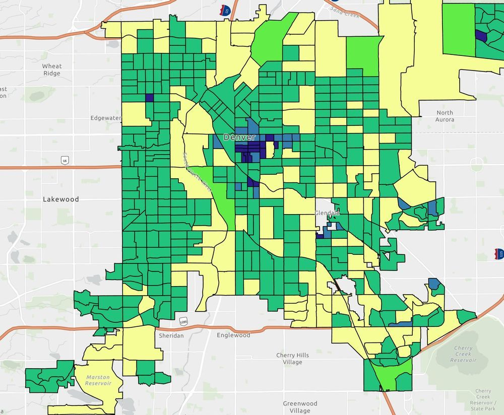

Denver Block-Group Demographic Atlas
DNVR-2026-02 · Delivered

Overview
A demographic atlas mapping U.S. Census variables across Denver block groups in NAD 1983 State Plane Colorado Central (feet). Each sheet uses a shared classification approach, legend structure, and layout so the maps read as a coherent series, with parks and interstates included for orientation.
Processing
SoftwareArcGIS Pro
Coordinate Reference Systems
- Horizontal
- NAD83 StatePlane Colorado Central FIPS 0502 (Feet)
Methods
- Census block-group joins for five demographic variables
- Consistent class breaks and legend design across the series
- Shared layout template for a coherent atlas
- Orientation context: parks, interstates, place labels
Deliverables
- Population density map (PDF)
- Age map (PDF)
- Ethnicity map (PDF)
- Gender map (PDF)
- Housing map (PDF)
Key Technical Challenge
Designing one classification and layout template that stays legible and comparable across five different demographic variables.